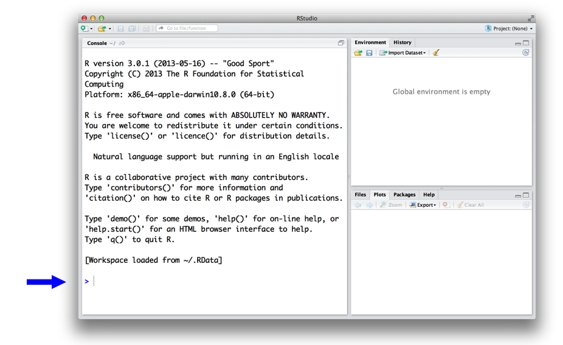
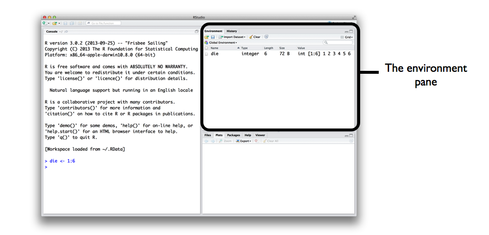
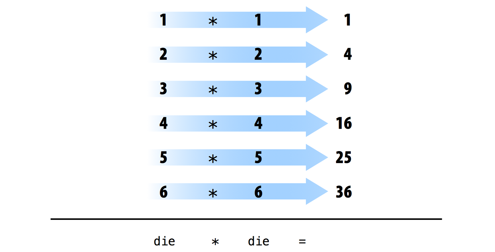
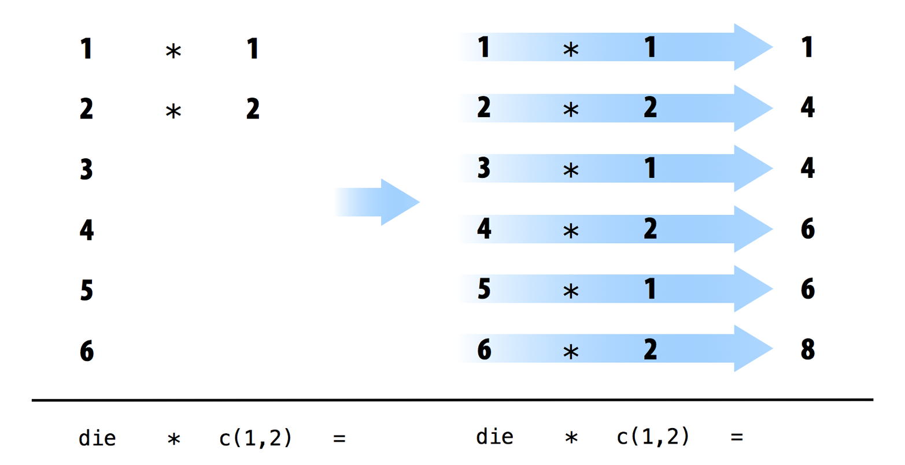
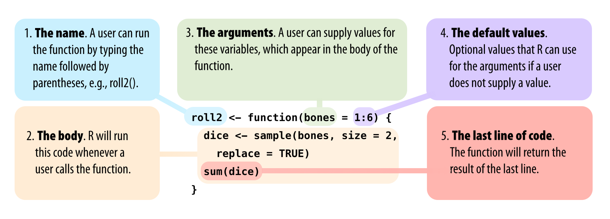
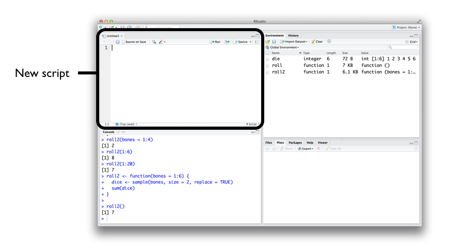
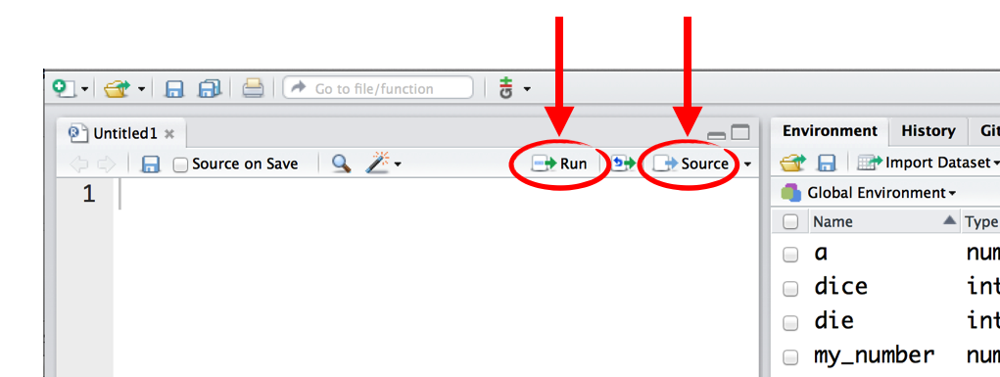

2 基本的な知識
この章では、すぐにプログラミングを始められるよう、R言語の全体像を解説します。ここでは、乱数を生成するために使用できる「仮想のサイコロ」を作成します。プログラミングの経験がなくても心配いりません。この章で必要なことはすべて学べます。
ペアのサイコロをシミュレートするには、まずサイコロをその本質的な特徴に分解する必要があります。サイコロのような物理的な物体をコンピュータの中に入れることはできませんが、そのオブジェクトに関する情報をコンピュータのメモリに保存することはできます。
どのような情報を保存すべきでしょうか？一般的に、サイコロには6つの重要な情報があります。サイコロを振ったとき、結果は1、2、3、4、5、6のいずれかの数値にしかなりません。これらの1から6までの数値を一つの値のグループとしてコンピュータのメモリに保存することで、サイコロの本質的な特性を捉えることができます。
まずはこれらの数値を保存することから始め、その後にサイコロを「振る」方法について考えてみましょう。
2.1 Rのユーザーインターフェース
コンピュータに数値を保存させる前に、コンピュータとの対話方法を知る必要があります。そこで登場するのがRとRStudioです。RStudioはコンピュータと対話する手段を提供し、Rはそのための言語を提供します。まずは、他のアプリケーションと同じようにRStudioを開いてください。開くと、Figure 2.1 に示すようなウィンドウが表示されるはずです。
Importantインストールのヒント
もし、まだコンピュータにRとRStudioをインストールしていない場合、あるいは何のことか分からない場合は、付録A)を参照してください。この付録では、これら2つの無料ツールの概要とダウンロード方法を説明しています。
RStudioのインターフェースはシンプルです。RStudioのコンソールペインの最下行にRのコードを入力し、Enterキーを押して実行します。入力するコードは、コンピュータに何かを命令するため、コマンド（Command）と呼ばれます。入力する行はコマンドラインと呼ばれます。
プロンプトでコマンドを入力してEnterキーを押すと、コンピュータはコマンドを実行し、その結果を表示します。その後、RStudioは次のコマンドのための新しいプロンプトを表示します。例えば、1 + 1 と入力してEnterキーを押すと、RStudioには次のように表示されます。
> 1 + 1
[1] 2
>結果の横に [1] が表示されていることに気づくでしょう。これは、この行が結果の最初の値から始まっていることをRが教えてくれているだけです。コマンドの中には複数の値を返すものもあり、その結果が数行にわたることがあります。例えば、100:130 というコマンドは31個の値を返し、100から130までの整数のシーケンスを作成します。出力の2行目と3行目の先頭に新しい括弧付きの数字が表示されることに注目してください。これらの数字は、2行目が結果の14番目の値から始まり、3行目が25番目の値から始まっていることを意味します。括弧内の数字はほとんど無視して構いません。
> 100:130
[1] 100 101 102 103 104 105 106 107 108 109 110 111 112
[14] 113 114 115 116 117 118 119 120 121 122 123 124 125
[25] 126 127 128 129 130
Tipコロン演算子
コロン演算子（:）は、2つの整数の間にあるすべての整数を返します。これは数値のシーケンスを作成する簡単な方法です。
NoteRは言語ではないのですか？
私がRを三人称で話すのを聞くかもしれません。例えば、「Rにこれをさせる」とか「Rにあのことを伝える」などと言いますが、もちろんR自体は何もできません。それは単なる言語です。このような話し方は、「RStudioコンソールのコマンドラインでR言語のコマンドを書くことで、コンピュータにこれを実行させる」という表現の略称です。実際に作業を行うのはRではなく、あなたのコンピュータです。
この略称は紛らわしく、少し怠慢な使い方でしょうか？はい。しかし、多くの人が使っていますか？私の知る限り全員が使っています。おそらく、その方が便利だからでしょう。
Noteコンパイルはいつ行うのですか？
C、Java、FORTRANなどの一部の言語では、人間が読めるコードを実行前にマシンが読めるコード（多くの場合1と0）にコンパイルする必要があります。そのような言語でのプログラミング経験がある方は、Rのコードも使用前にコンパイルする必要があるのか疑問に思うかもしれません。答えは「いいえ」です。Rは動的プログラミング言語であり、実行時にRが自動的にコードを解釈します。
不完全なコマンドを入力してEnterキーを押すと、Rは + プロンプトを表示します。これは、Rがコマンドの残りの入力を待っていることを意味します。コマンドを完成させるか、Escapeキーを押してやり直してください。
> 5 -
+
+ 1
[1] 4Rが認識できないコマンドを入力すると、Rはエラーメッセージを返します。エラーメッセージが表示されてもパニックにならないでください。Rは、あなたのコンピュータがあなたの要求を理解できなかった、あるいは実行できなかったと伝えているだけです。次のプロンプトで別のコマンドを試すことができます。
> 3 % 5
Error: unexpected input in "3 % 5"
>コマンドラインの扱いに慣れてくれば、電卓で行うようなことは何でもRで簡単に行うことができます。例えば、基本的な算術演算は次のようになります。
2 * 3
## 6
4 - 1
## 3
6 / (4 - 1)
## 2このコードに何か違う点があることに気づきましたか？ > や [1] を除外しています。これにより、自分のコンソールに貼り付けて試したい場合に、コードをコピーしやすくなります。
Rはハッシュタグ文字 # を特別な方法で扱います。Rは行内のハッシュタグ以降にあるものは一切実行しません。このため、ハッシュタグはコードにコメントや注釈を追加するのに非常に便利です。人間はコメントを読むことができますが、コンピュータはそれを無視します。ハッシュタグはRにおいてコメント記号として知られています。
本書のこれ以降では、Rコードの出力を表示するためにハッシュタグを使用します。私自身のコメントを追加するにはシングルハッシュタグ（#）を、コードの結果を表示するにはダブルハッシュタグ（##）を使用します。> や [1] は、特に注目してほしい場合を除き、表示を避けます。
Importantコマンドの中止
実行に時間がかかるRコマンドもあります。実行中のコマンドをキャンセルするには、Ctrl + C を押します。ただし、Rがコマンドをキャンセルするのにも時間がかかる場合があることに注意してください。
練習問題：数値のマジック
これがRStudioでRコードを実行するための基本的なインターフェースです。理解できましたか？もしそうなら、これらの簡単なタスクを試してみてください。すべて正しく実行できれば、開始したときと同じ数値に戻るはずです。
- 任意の数値を選び、それに2を足します。
- その結果に3を掛けます。
- 答えから6を引きます。
- 得られた結果を3で割ります。
本書全体を通して、上記のように練習問題をチャンクの中に配置します。各練習問題の後には、以下のようなモデル回答を掲載します。
解答例 10という数値から始めて、以下の手順を実行します。
10 + 2
## 12
12 * 3
## 36
36 - 6
## 30
30 / 3
## 102.2 オブジェクト（Objects）
Rの使い方がわかったところで、それを使って仮想のサイコロを作ってみましょう。数ページ前の : 演算子を使えば、1から6までの数値のグループを簡単に作成できます。: 演算子は、結果をベクトル（vector）として返します。ベクトルとは数値の一次元の集合です。
1:6
## 1 2 3 4 5 6仮想のサイコロの見た目はこれだけです！しかし、まだ終わりではありません。1:6 を実行すると表示用の数値ベクトルが生成されましたが、そのベクトルはコンピュータのメモリのどこにも保存されていません。あなたが見ているのは、一時的に存在してすぐにコンピュータのRAMの中に消えてしまった6つの数値の足跡のようなものです。それらの数値を再度使いたい場合は、コンピュータにどこかへ保存するよう依頼する必要があります。これはRオブジェクトを作成することで可能です。
Rでは、Rオブジェクトの中にデータを格納することで、データを保存できます。オブジェクトとは何でしょうか？単に、保存されたデータを呼び出すために使用できる「名前」のことです。例えば、データを a や b といったオブジェクトに保存できます。Rはオブジェクトに遭遇すると、どこでもそれを保存されているデータに置き換えます。
a <- 1
a
## 1
a + 2
## 3
Note何が起きたのでしょうか？
- Rオブジェクトを作成するには、名前を選び、次に「より小さい」記号
<とマイナス記号-を組み合わせて、そこにデータを保存します。この組み合わせは矢印<-のように見えます。Rはオブジェクトを作成し、指定した名前を付け、矢印の後に続くものをすべてそこに格納します。したがって、a <- 1は1をaという名前のオブジェクトに保存します。 - Rに
aの中身を尋ねると、Rは次の行で教えてくれます。 - オブジェクトを新しいRコマンドで使用することもできます。
aには以前1という値が保存されていたため、ここでは1に2を足しています。
もう一つの例として、次のコードは、1から6までの数値を含む die という名前のオブジェクトを作成します。オブジェクトに何が保存されているかを確認するには、そのオブジェクトの名前だけを入力します。
die <- 1:6
die
## 1 2 3 4 5 6オブジェクトを作成すると、Figure 2.2 に示すように、RStudioの環境（Environment）ペインにそのオブジェクトが表示されます。このペインには、RStudioを開いてから作成したすべてのオブジェクトが表示されます。

Rのオブジェクトには、ほとんど好きな名前を付けることができますが、いくつかルールがあります。第一に、名前を数字から始めることはできません。第二に、^, !, $, @, +, -, /, * などの一部の特殊記号は使用できません。
| 良い名前 | エラーになる名前 |
|---|---|
| a | 1trial |
| b | $ |
| FOO | ^mean |
| my_var | 2nd |
| .day | !bad |
Warning大文字と小文字の区別
Rは大文字と小文字を区別（Case-sensitive）するため、name と Name は異なるオブジェクトを指します。
Name <- 1 name <- 0
Name + 1 ## 2
最後に、Rは許可を求めることなく、オブジェクトに保存されている以前の情報を上書きします。そのため、すでに使われている名前は使用しないのが得策です。
my_number <- 1
my_number
## 1
my_number <- 999
my_number
## 999すでにあるオブジェクト名を確認するには、ls 関数を使用します。
ls()
## "a" "die" "my_number" "name" "Name"また、RStudioの環境ペインを確認することでも、使用済みの名前を確認できます。
これで、コンピュータのメモリに仮想のサイコロが保存されました。die という単語を入力すれば、いつでもアクセスできます。このサイコロを使って何ができるでしょうか？実に多くのことができます。Rはコマンド内にオブジェクト名が現れると、常にその中身と置き換えます。例えば、サイコロを使ってあらゆる種類の数学的演算が可能です。数学はサイコロを振るのにはあまり役立ちませんが、数値の集合を操作することはデータサイエンティストとしての本領発揮となります。その方法を見てみましょう。
die - 1
## 0 1 2 3 4 5
die / 2
## 0.5 1.0 1.5 2.0 2.5 3.0
die * die
## 1 4 9 16 25 36線形代数のファンであれば、Rが常に行列の乗算ルールに従っているわけではないことに気づくかもしれません。代わりに、Rは要素ごとの実行（element-wise execution）を使用します。数値の集合を操作するとき、Rは集合内の各要素に同じ操作を適用します。例えば、die - 1 を実行すると、Rは die の各要素から1を引きます。
演算において2つ以上のベクトルを使用する場合、Rはベクトルを並べて個別の演算を順番に実行します。例えば、die * die を実行すると、Rは2つの die ベクトルを並べ、ベクトル1の最初の要素とベクトル2の最初の要素を掛け合わせます。次に、ベクトル1の2番目の要素とベクトル2の2番目の要素を掛け合わせ、すべての要素が掛け合わされるまでこれを繰り返します。結果は、Figure 2.3 に示すように、最初の2つのベクトルと同じ長さの新しいベクトルになります。

長さの異なる2つのベクトルをRに与えると、Rは短い方のベクトルを長い方のベクトルと同じ長さになるまで繰り返し、その後に計算を行います（ Figure 2.4 参照）。これは恒久的な変更ではなく、計算が終われば短いベクトルは元のサイズに戻ります。短いベクトルの長さが長いベクトルの長さで割り切れない場合、Rは警告メッセージを返します。この動作はベクトルの再利用（vector recycling）と呼ばれ、Rが要素ごとの演算を行うのに役立っています。
1:2
## 1 2
1:4
## 1 2 3 4
die
## 1 2 3 4 5 6
die + 1:2
## 2 4 4 6 6 8
die + 1:4
## 2 4 6 8 6 8
Warning message:
In die + 1:4 :
longer object length is not a multiple of shorter object length
要素ごとの演算は、値のグループを整然と操作できるため、Rの非常に便利な機能です。データセットを扱い始めると、要素ごとの演算によって、ある観測値やケースの値が、必ず同じ観測値やケースの値とペアになることが保証されます。また、要素ごとの演算により、独自のプログラムや関数をRで書きやすくなります。
しかし、Rが伝統的な行列乗算を諦めたわけではありません。必要なときにそれを要求すればよいだけです。内積（Inner multiplication）は %*% 演算子で、外積（Outer multiplication）は %o% 演算子で行うことができます。
die %*% die
## 91
die %o% die
## [,1] [,2] [,3] [,4] [,5] [,6]
## [1,] 1 2 3 4 5 6
## [2,] 2 4 6 8 10 12
## [3,] 3 6 9 12 15 18
## [4,] 4 8 12 16 20 24
## [5,] 5 10 15 20 25 30
## [6,] 6 12 18 24 30 36また、t で行列を転置したり、det で行列式を求めたりすることもできます。
これらの操作に詳しくなくても心配しないでください。簡単に調べることができますし、本書では必要ありません。
die オブジェクトを使って計算ができるようになったところで、それを「振る」方法を見てみましょう。サイコロを振るには、基本的な算術演算よりも高度なもの、つまりサイコロの値をランダムに選択する方法が必要です。そのためには、関数（Function）が必要になります。
2.3 関数（Functions）
Rには、ランダムサンプリングのような高度なタスクを実行するために使用できる多くの関数が備わっています。例えば、round 関数で数値を四捨五入したり、factorial 関数で階乗を計算したりできます。関数の使い方は非常に簡単です。関数の名前を書き、その後の括弧の中に操作したいデータを記述するだけです。
round(3.1415)
## 3
factorial(3)
## 6関数に渡すデータは、関数の引数（argument）と呼ばれます。引数は生データ、Rオブジェクト、あるいは別のR関数の結果であっても構いません。最後のケースでは、Figure 2.5 に示すように、Rは最も内側の関数から外側に向かって処理を進めます。
mean(1:6)
## 3.5
mean(die)
## 3.5
round(mean(die))
## 4幸運なことに、サイコロを「振る」のに役立つR関数があります。Rの sample 関数を使ってサイコロの目をシミュレートできます。sample は、x という名前のベクトルと、size という名前の数値の2つの引数を取ります。sample は、ベクトルから size 個の要素を返します。
sample(x = 1:4, size = 2)
## 3 2サイコロを振って数値を得るには、x に die を設定し、そこから1つの要素をサンプリングします。振るたびに新しい（おそらく異なる）数値が得られます。
sample(x = die, size = 1)
## 2
sample(x = die, size = 1)
## 1
sample(x = die, size = 1)
## 6多くのR関数は、その仕事を遂行するために役立つ複数の引数を取ります。各引数をカンマで区切りさえすれば、関数にいくつでも引数を与えることができます。
先ほどのコードで、die と 1 を sample の引数名である x と size に対応させて設定したことにお気づきかもしれません。すべてのR関数のすべての引数には名前があります。名前をデータと等号で結ぶことで、どのデータをどの引数に割り当てるかを指定できます。これは、同じ関数に複数の引数を渡すようになると重要になります。名前を使うことで、誤ったデータを誤った引数に渡すことを避けることができます。ただし、名前の使用は任意です。Rユーザーが関数の最初の引数の名前をあまり使わないことに気づくでしょう。したがって、先ほどのコードは次のように書かれることもあります。
sample(die, size = 1)
## 2多くの場合、最初の引数の名前はそれほど説明的ではなく、最初のデータが何を参照しているかはどのみち明白であることが多いからです。
しかし、どの引数名を使えばよいのか、どうすればわかるのでしょうか？関数が期待していない名前を使おうとすると、おそらくエラーが発生します。
round(3.1415, corners = 2)
## Error in round(3.1415, corners = 2) : unused argument(s) (corners = 2)関数でどの名前を使うべきかわからない場合は、args を使って関数の引数を調べることができます。これを行うには、args の後の括弧内に関数名を入れます。例えば、round 関数には x と digits という2つの引数があることがわかります。
args(round)
## function (x, digits = 0)
## NULLargs が示すように、round の digits 引数にはすでに0が設定されていることに気づきましたか？頻繁に、R関数は digits のようなオプション引数を取ります。これらがオプションと見なされるのは、デフォルト値（既定値）が設定されているからです。必要であればオプション引数に新しい値を渡すことができますし、渡さなければRはデフォルト値を使用します。例えば、round はデフォルトで小数点以下0桁で四捨五入します。デフォルトを上書きするには、digits に独自の値を指定します。
round(3.1415)
## 3
round(3.1415, digits = 2)
## 3.14複数の引数を持つ関数を呼び出すときは、最初の1つか2つの引数以降は、それぞれの引数名を書き出すべきです。なぜでしょうか？第一に、そうすることであなたや他の人がコードを理解しやすくなるからです。最初の入力（場合によっては2番目の入力も）がどの引数を指しているかは通常明白です。しかし、すべてのR関数の3番目や4番目の引数まで覚えておくには膨大な記憶力が必要です。第二に、そしてより重要なことに、引数名を書き出すことでエラーを防げるからです。
引数名を書き出さない場合、Rは関数の引数に対して、入力された値の順番でマッチングを行います。例えば次のコードでは、最初の値 die は sample の最初の引数である x にマッチし、次の値 1 は次の引数である size にマッチします。
sample(die, 1)
## 2提供する引数が増えるにつれて、あなたの指定した順番とRの想定する順番が一致しなくなる可能性が高くなります。その結果、値が誤った引数に渡される可能性があります。引数名を使えばこれを防げます。Rは、引数の順番に関係なく、常に値をその引数名にマッチさせます。
sample(size = 1, x = die)
## 22.3.1 復元抽出（Sample with Replacement）
size = 2 と設定すれば、ペアのサイコロを「ほぼ」シミュレートできます。そのコードを実行する前に、なぜ「ほぼ」なのかを少し考えてみてください。sample は各サイコロに1つずつ、合計2つの数値を返します。
sample(die, size = 2)
## 3 4これが「ほぼ」機能すると言ったのは、この方法にはおかしな点があるからです。何度も実行してみると、2番目のサイコロの値が決して最初のサイコロと同じ値にならないことに気づくでしょう。つまり、3のゾロ目や「スネークアイ（1のゾロ目）」が出ることは決してありません。何が起きているのでしょうか？
デフォルトでは、sample は非復元抽出（sample without replacement）を行います。これが何を意味するかを理解するために、sample が die のすべての値を瓶や壺の中に入れていると想像してください。そして、sample が瓶の中に手を入れて、サンプルを作るために値を一つずつ取り出すところを想像してください。一度瓶から取り出された値は、sample によって脇に置かれます。その値は瓶に戻されないため、二度と取り出されることはありません。したがって、sample が最初の抽出で6を選んだ場合、2回目の抽出で6を選ぶことはできません。6はもう瓶の中に残っていないからです。sample は電子的にサンプルを作成しますが、この物理的な動作を模倣しています。
この動作の副作用として、それぞれの抽出がそれ以前の抽出の結果に依存することになります。しかし、現実の世界でペアのサイコロを振る場合、それぞれのサイコロはもう一方から独立しています。最初のサイコロが6になっても、2番目のサイコロが6になるのを妨げることはありません。実際、最初のサイコロは2番目のサイコロにいかなる影響も与えません。この動作を sample で再現するには、引数 replace = TRUE を追加します。
sample(die, size = 2, replace = TRUE)
## 5 5引数 replace = TRUE を指定すると、sample は復元抽出（sample with replacement）を行います。復元抽出と非復元抽出の違いを理解するには、先ほどの瓶の例が役立ちます。sample が復元を使用する場合、瓶から値を取り出してその値を記録します。その後、その値を瓶に戻します。言い換えれば、sample は抽出のたびに各値を「復元（リプレース）」します。その結果、sample は2回目の抽出でも同じ値を選択する可能性があります。すべての値に、毎回選ばれるチャンスがあります。それは、すべての抽出が「最初の抽出」であるかのような状態です。
復元抽出は、独立したランダムサンプルを作成する簡単な方法です。サンプル内の各値は、他の値から独立したサイズ1のサンプルとなります。これがペアのサイコロをシミュレートする正しい方法です。
sample(die, size = 2, replace = TRUE)
## 2 4自分自身を褒めてあげましょう。Rで最初のシミュレーションを実行できました！これで、ペアのサイコロを振った結果をシミュレートする方法が手に入りました。サイコロの目を合計したい場合は、その結果をそのまま sum 関数に渡すことができます。
dice <- sample(die, size = 2, replace = TRUE)
dice
## 2 4
sum(dice)
## 6もし dice を何度も呼び出したらどうなるでしょうか？Rはそのたびに新しいサイコロの値を生成してくれるでしょうか？試してみましょう。
dice
## 2 4
dice
## 2 4
dice
## 2 4いいえ。dice を呼び出すたびに、Rは以前に一度だけ sample を呼び出して dice に保存した結果を表示します。Rは、サイコロの新しいロールを作成するために sample(die, 2, replace = TRUE) を再実行することはありません。ある意味で、これは安心できることです。一度結果をRオブジェクトに保存すれば、その結果は変わりません。オブジェクトを呼び出すたびにその値が変わってしまうようでは、プログラミングは非常に困難なものになるでしょう。
しかし、呼び出すたびにサイコロを振り直してくれるオブジェクトがあれば便利です。独自のR関数を書くことで、そのようなオブジェクトを作ることができます。
2.4 独自の関数の作成
これまでのまとめとして、ペアのサイコロのロールをシミュレートする動作するRコードがすでに手元にあります。
die <- 1:6
dice <- sample(die, size = 2, replace = TRUE)
sum(dice)サイコロを振り直したいときはいつでも、このコードをコンソールに再入力することができます。しかし、これはあまりスマートな方法ではありません。このコードを独自の関数の中にラップ（包み込む）してしまえば、ずっと使いやすくなります。これからまさに行うのはそれです。ここでは roll という名前の関数を作成し、仮想のサイコロを振るために使用できるようにします。完成すると、この関数は次のように動作します。roll() を呼び出すたびに、Rは2つのサイコロを振った合計を返します。
roll()
## 8
roll()
## 3
roll()
## 7関数は神秘的で難しそうに見えるかもしれませんが、単なる別の種類のRオブジェクトにすぎません。データを含む代わりに、関数はコードを含んでいます。このコードは、新しい状況で簡単に再利用できる特別な形式で保存されています。その形式を再現することで、独自の関数を書くことができます。
2.4.1 関数コンストラクタ（The Function Constructor）
Rのすべての関数には、名前、コードの本体（body）、および引数のセットという3つの基本的なパーツがあります。独自の関数を作成するには、これらのパーツを複製し、Rオブジェクトに保存する必要があります。これには function 関数を使用します。そのためには、function() を呼び出し、その後に一対の中括弧 {} を続けます。
my_function <- function() {}function は、中括弧の間に配置したRコードから関数を構築します。例えば、次のように呼び出すことで、サイコロのコードを関数に変えることができます。
roll <- function() {
die <- 1:6
dice <- sample(die, size = 2, replace = TRUE)
sum(dice)
}
Noteインデント
中括弧の間のコードの各行をインデントしたことに注目してください。これにより、あなたにとっても私にとってもコードが読みやすくなりますが、コードの実行には影響しません。Rはスペースや改行を無視し、一度に一つの完全な式を実行します。
最初の括弧 { の後、各行の間でEnterキーを押してください。Rは、あなたが最後の括弧 } を入力するまで、応答を待ってくれます。
function の出力をRオブジェクトに保存するのを忘れないでください。このオブジェクトがあなたの新しい関数になります。それを使用するには、オブジェクト名の後に開き括弧と閉じ括弧を書きます。
roll()
## 9括弧は、Rに関数を実行させる「引き金（トリガー）」と考えることができます。括弧を付けずに関数名を入力すると、Rはその関数内に保存されているコードを表示します。括弧を付けて名前を入力すると、Rはそのコードを実行します。
roll
## function() {
## die <- 1:6
## dice <- sample(die, size = 2, replace = TRUE)
## sum(dice)
## }
roll()
## 6関数の内部に置くコードは、関数の本体（body）として知られています。Rで関数を実行すると、Rは本体内のすべてのコードを実行し、最後の行の結果を返します。最後の行が値を返さない場合、関数も値を返しません。したがって、最終行が必ず値を返すようにする必要があります。これを確認する一つの方法は、コマンドラインでコードの本体を一行ずつ実行した場合にどうなるかを考えることです。Rは最後の行の後に結果を表示するでしょうか、それとも表示しないでしょうか？
結果を表示するコードの例です。
dice
1 + 1
sqrt(2)そして、表示しないコードの例です。
dice <- sample(die, size = 2, replace = TRUE)
two <- 1 + 1
a <- sqrt(2)パターンに気づきましたか？これらのコード行はコマンドラインに値を返さず、値をオブジェクトに保存しています。
2.5 引数（Arguments）
もし、関数から一行削除して、名前を die から bones に変えたらどうなるでしょうか？
roll2 <- function() {
dice <- sample(bones, size = 2, replace = TRUE)
sum(dice)
}これで関数を実行するとエラーが発生します。この関数はその仕事をするために bones というオブジェクトを必要としますが、bones という名前のオブジェクトが見当たらないからです。
roll2()
## Error in sample(bones, size = 2, replace = TRUE) :
## object 'bones' not foundroll2 を定義する際、function の後の括弧内に bones という名前を入れれば、roll2 を呼び出すときに bones を提供できるようになります。
roll2 <- function(bones) {
dice <- sample(bones, size = 2, replace = TRUE)
sum(dice)
}これで、roll2 を呼び出す際に bones を提供すれば、関数が動作するようになります。これを利用して、呼び出すたびに異なる種類のサイコロを振ることができます。「ダンジョンズ&ドラゴンズ」の始まりです！
ペアのサイコロを振っていることを忘れないでください。
roll2(bones = 1:4)
## 3
roll2(bones = 1:6)
## 10
roll2(1:20)
## 31roll2 を呼び出す際に bones 引数に値を指定しないと、依然としてエラーが発生することに注意してください。
roll2()
## Error in sample(bones, size = 2, replace = TRUE) :
## argument "bones" is missing, with no defaultbones 引数にデフォルト値を与えることで、このエラーを防ぐことができます。そのためには、roll2 を定義する際に bones を特定の値と等しく設定します。
roll2 <- function(bones = 1:6) {
dice <- sample(bones, size = 2, replace = TRUE)
sum(dice)
}これで、必要に応じて bones に新しい値を指定することもできますし、指定しなければ roll2 はデフォルト値を使用します。
roll2()
## 9関数には好きなだけ引数を与えることができます。function の後の括弧の中に、引数の名前をカンマで区切って並べるだけです。関数が実行されると、Rは関数本体内の各引数名を、ユーザーがその引数に対して提供した値に置き換えます。ユーザーが値を指定しなかった場合、Rは引数名を引数のデフォルト値（定義していれば）に置き換えます。
まとめると、function は独自のR関数を構築するのに役立ちます。function の後の中括弧内にコードを書くことで、関数が実行するコードの本体を作成します。function の後の括弧内に名前を指定することで、関数が使用する引数を作成します。最後に、Figure 2.6 に示すように、その出力をRオブジェクトに保存することで、関数に名前を付けます。
一度関数を作成すれば、Rはそれを他のすべてのR関数と同じように扱います。これがどれほど便利か考えてみてください。Microsoftのメニューバーに新しいExcelのオプションを追加したり、PowerPointに新しいスライドのアニメーションを追加しようとしたことがありますか？プログラミング言語を使えば、そのようなことが可能です。Rでのプログラミングを学べば、いつでも自分専用のカスタマイズされた再現可能なツールを作成できるようになります。「プロジェクト3：スロットマシン」では、Rでの関数作成についてさらに詳しく学びます。

2.6 スクリプト（Scripts）
もし roll2 をもう一度編集したくなったらどうしますか？ roll2 の各行をコンソールに再入力することもできますが、下書きがあればずっと簡単です。Rスクリプトを使用すれば、作業を進めながらコードの下書きを作成できます。Rスクリプトは、Rコードを保存するだけのプレーンテキストファイルです。RStudioのメニューバーで File > New File > R script を選択すると、Rスクリプトを開くことができます。すると、Figure 2.7 に示すように、RStudioはコンソールペインの上に新しいスクリプトを開きます。
すべてのRコードは、コンソールで実行する前にスクリプトに書いて編集することを強くお勧めします。なぜでしょうか？この習慣によって、作業の「再現可能な記録」が作成されるからです。一日の作業が終わったらスクリプトを保存し、翌日にはそれを使って分析全体を再実行できます。また、スクリプトはコードの編集や校正にも非常に便利で、他の人と作業を共有するための優れたコピーにもなります。スクリプトを保存するには、スクリプトペインをクリックし、メニューバーの File > Save As を選択します。

RStudioには、スクリプトの作業を容易にする多くの機能が組み込まれています。まず、Figure 2.8 に示すように、[Run] ボタンをクリックすることで、スクリプト内のコードを自動的に一行実行できます。
Rは、カーソルがある行を実行します。セクション全体をハイライトしている場合、Rはそのハイライトされたコードを実行します。あるいは、[Source] ボタンをクリックしてスクリプト全体を実行することもできます。ボタンをクリックするのが面倒ですか？ [Run] ボタンのショートカットとして Ctrl + Enter を使用できます。Macの場合は Command + Enter です。

スクリプトの重要性にまだ確信が持てないとしても、すぐに納得するはずです。コンソールの単一行のコマンドラインで複数行のコードを書くのは苦痛になります。その頭痛を避けるために、次の章に進む前に最初のスクリプトを開いておきましょう。
Tip関数の抽出（Extract function）
RStudioには、関数構築を支援するツールが備わっています。これを使用するには、Rスクリプト内で関数に変換したいコード行をハイライトします。次に、メニューバーで Code > Extract Function をクリックします。RStudioは使用する関数名を尋ね、コードを function 呼び出しの中にラップします。また、コード内の未定義の変数をスキャンし、それらを引数として設定します。
RStudioの作業結果は再確認した方がよいでしょう。RStudioはあなたのコードが正しいことを前提としているため、驚くような結果になった場合は、コードに問題がある可能性があります。
2.7 まとめ
すでに多くのことを学びました。これでコンピュータのメモリに仮想のサイコロが保存され、ペアのサイコロを振る独自のR関数も作成できました。また、R言語を話し始めています。
見てきたように、Rはコンピュータと対話するために使用できる言語です。Rでコマンドを書き、コンピュータが読み取れるようにコマンドラインで実行します。コンピュータは（例えばエラーを犯したときなどに）時々返答してきますが、通常はあなたの要求に従い、その結果を表示するだけです。
R言語の最も重要な2つの構成要素は、データを保存するオブジェクト（Objects）と、データを操作する関数（Functions）です。また、Rは基本的なタスクを実行するために +, -, *, /, <- といった多くの演算子を使用します。データサイエンティストとして、Rオブジェクトを使ってコンピュータのメモリにデータを保存し、関数を使ってタスクを自動化し、複雑な計算を行います。オブジェクトについては「プロジェクト2：トランプ」で、関数については「プロジェクト3：スロットマシン」でさらに深く掘り下げます。ここで身に付けた語彙は、それらのプロジェクトを理解する助けになるでしょう。しかし、サイコロの話はまだ終わりではありません。
「パッケージとヘルプページ」では、サイコロを使っていくつかのシミュレーションを行い、Rで最初のグラフを作成します。また、R言語の最も有用な2つの構成要素であるRパッケージ（Rの才能ある開発者コミュニティによって書かれた関数のコレクション）と、Rのドキュメント（すべての関数とデータセットを解説したR内蔵のヘルプページ）についても見ていきます。